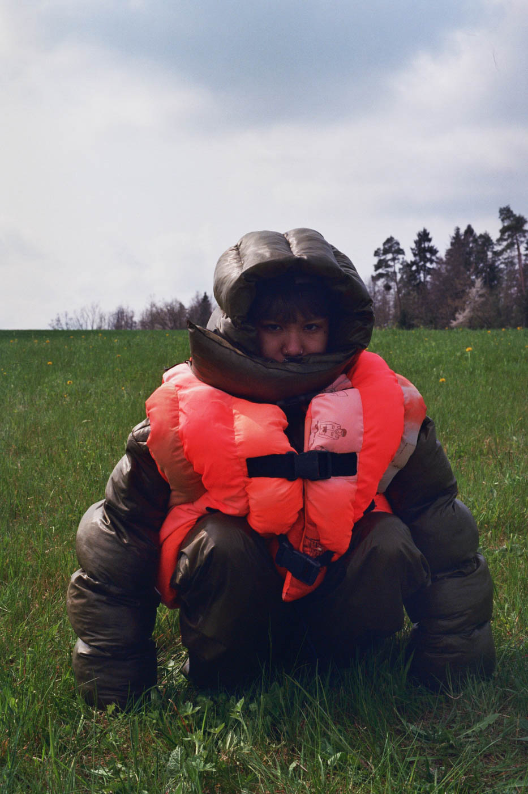
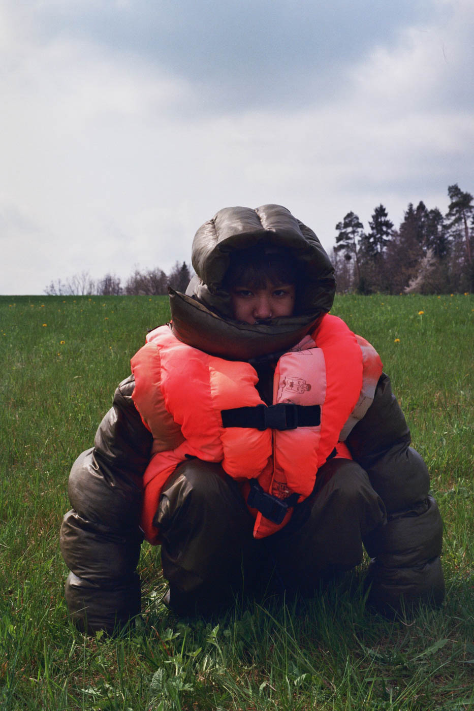

My name is Elias Al‐Ameri. I come from switzerland and Iraq and I'm a passionate artist and fashion photograper. I successfully completed my Swiss Certificate of Competence as a photographer EFZ at the School of Art and Design Zurich, Switzerland.
I have a lot of creative practices. I am interested in all kinds of different art forms like visual arts as in sculptures, paintings and fashion design. My life is a constant creative process. New creative concepts are always welcome.
اسمي إلياس العامري. أنا من سويسرا والعراق، وأنا فنان ومصور أزياء شغوف، وقد أكملت بنجاح شهادة الكفاءة الفيدرالية كمصور فوتوغرافي في مدرسة الفنون والتصميم في زيورخ سويسرا
لدي العديد من الأنشطة الإبداعية. أنا مهتم بجميع أشكال الفنون الممكنة، مثل الفنون البصرية كالتماثيل واللوحات وتصميم الأزياء. حياتي عباره عن عملية إبداعية مستمرة. مشاريع المفاهيم الإبداعية الجديدة دائماً مرحب بها
@alamerielias
 
